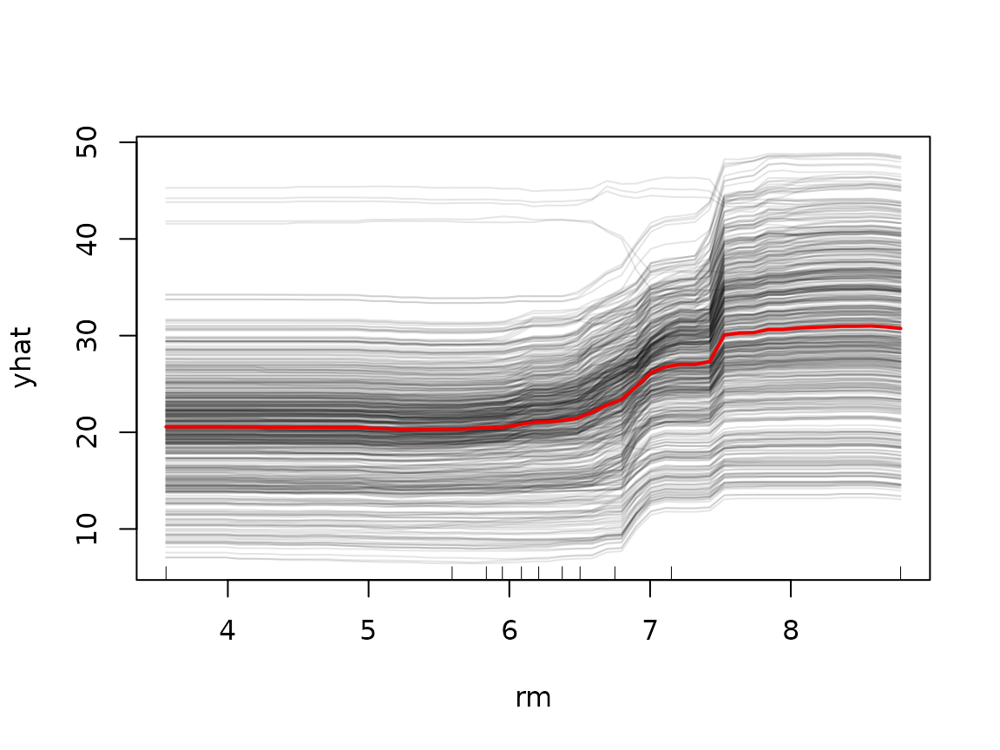
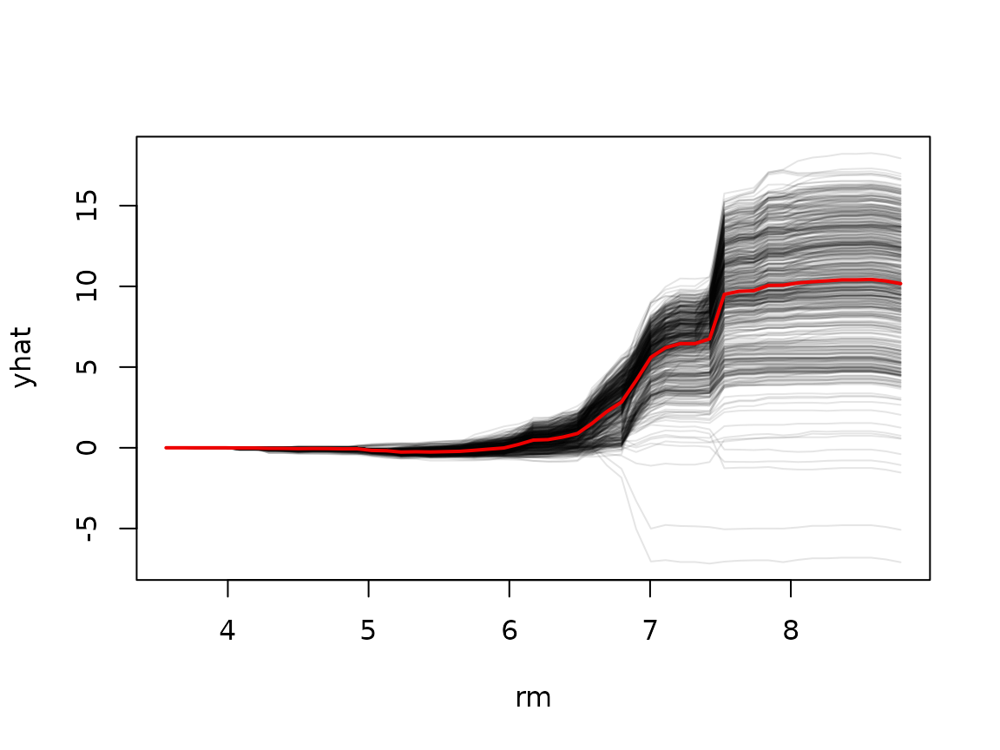

A partial dependence plot shows the average effect of a predictor, which can mask interesting heterogeneity: if a predictor affects different observations in different ways (e.g., due to interactions), the average curve may not represent any individual observation well. Individual conditional expectation (ICE) curves (Goldstein et al., 2015) address this by drawing one curve per observation; the PDP is just the average of the ICE curves.
ICE curves
Set ice = TRUE in the call to partial()
(ICE curves are only available for a single predictor):
library(pdp)
library(randomForest)
data(boston)
set.seed(101)
boston.rf <- randomForest(cmedv ~ ., data = boston, ntree = 250)
rm.ice <- partial(boston.rf, pred.var = "rm", ice = TRUE, train = boston)
head(rm.ice) # one row per observation per grid point
#> rm yhat yhat.id
#> 1 3.56100 24.08488 1
#> 2 3.66538 24.08488 1
#> 3 3.76976 24.08488 1
#> 4 3.87414 24.08488 1
#> 5 3.97852 24.08488 1
#> 6 4.08290 24.08488 1The result contains a yhat.id column identifying which
observation each prediction belongs to. The plot() method
draws the individual curves along with their average (the PDP) in
red:
plot(rm.ice, alpha = 0.1, rug = TRUE, train = boston)
Centered ICE (c-ICE) curves
When the curves have very different starting points, it can be hard
to judge whether they are parallel (i.e., no interaction).
Centered ICE curves force every curve to start at zero, making
heterogeneity in the shape of the curves much easier to see.
Either set center = TRUE in the call to
partial() or center at plotting time:
plot(rm.ice, center = TRUE, alpha = 0.1)
The divergence of the curves for rm above roughly 6.5
indicates an interaction with at least one other predictor.
User-supplied prediction functions
The pred.fun argument gives full control over how
predictions are generated. It must be a function of exactly two
arguments—object and newdata—and may return a
single (aggregated) prediction or one prediction per row of
newdata. Whenever multiple predictions per grid point are
returned, you get ICE-style output automatically.
For example, a random forest is an ensemble, so we could display one curve per tree rather than per observation, or compute a trimmed mean instead of the usual average:
# 10% trimmed mean instead of the ordinary average
pred.trimmed <- function(object, newdata) {
mean(predict(object, newdata = newdata), trim = 0.1)
}
pd.trimmed <- partial(boston.rf, pred.var = "rm", pred.fun = pred.trimmed,
train = boston)
plot(pd.trimmed)Similarly, pred.fun is the natural way to handle models
whose predict() methods need special arguments or return
unusual structures; see vignette("pdp", package = "pdp")
for the simpler built-in behavior.